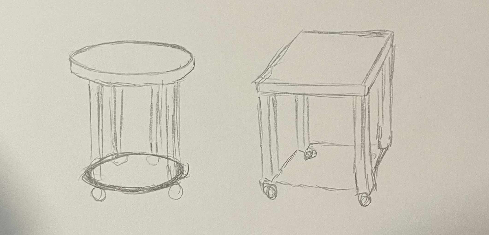
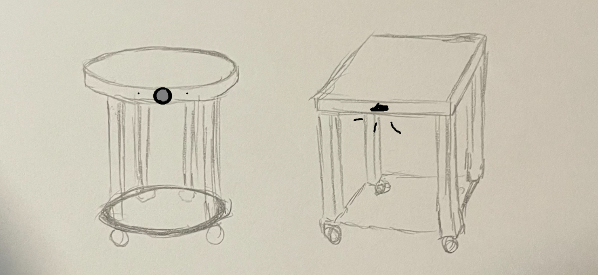

<div class="textcontainer">
<br></br>
<h3>Week 1: Final Project Proposal</h3>
<p class = "margin"></p>
<h4>Moving Workbench</h4>
<p class = "margin"></p>
<p>
This summer, I worked in manufacturing. Often times, parts and tools would have to be transported to different parts of the factory. Some equipment
was heavy or inconvenient to carry, especially if you have your hands full. Other times, it could be helpful to extend your workspace or to have a mobile
surface nearby while working (i.e. for placing tools and other equipment).
</p>
<p>In order to assist in these scenarios, I thought it would be fun to build a moving workbench that can follow a specified user around. The idea is
esssentially a moving table on wheels.
</p>
<p>General idea:</p>

<p class = "margin"></p>
<p>Workbench features:</p>
<ul>
<li>Wooden top & legs</li>
<li>Motor hidden underneath bottom surface for mobility</li>
<li>4 wheels attached to bottom</li>
<li>Microcontroller used for detecting user</li>
</ul>
<p> Ideas for User Detection: </p>
<p> I have no idea how to make the workbench detect and follow the user yet. At the moment, I would think to use a camera and computer vision, some type of sensor,
or some type of remote control system.
</p>

<p class = "margin"></p>
<p> These are my current implementation ideas for the project from what I know now. I expect my implementation ideas to evolve as I learn more! </p>
</div>